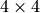
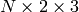

tract_querier.tract_label_indices¶
Classes
| tract_querier.tract_label_indices.BoundingBox | Bounding box assuming RAS coordinate system |
| tract_querier.tract_label_indices.TractographySpatialIndexing(...) | This class implements a mutual spatial indexing of |
Functions
| tract_querier.tract_label_indices.compute_label_bounding_boxes(...) | |
| tract_querier.tract_label_indices.compute_label_crossings(...) | |
| tract_querier.tract_label_indices.compute_label_endings(...) | |
| tract_querier.tract_label_indices.compute_label_endings_start_end(...) | |
| tract_querier.tract_label_indices.compute_tract_bounding_boxes(tracts) | |
| tract_querier.tract_label_indices.compute_tract_label_indices(...) |
- class tract_querier.tract_label_indices.TractographySpatialIndexing(tractography, image, affine_ijk_2_ras, length_threshold, crossing_threshold)[source]¶
This class implements a mutual spatial indexing of an labeled image and a tractography
Parameters : tractography : Tractography
Tractography object
image : array_like, 3-dimensional
a piecewise constant 3D image or image of labels
affine_ijk_2_ras : array_like, 
the affine transform of each IJK coordinate on the image to RAS space
length_threshold : float
minimum length in mm of a tract to be considered in the indexing
crossing_threshold : float
the ratio of a tract that needs to be inside a label to be considered that it crosses it
Attributes
tractography Tractography Tractography object image array_like, 3-dimensional a piecewise constant 3D image or image of labels affine_ijk_2_ras array_like, the affine transform of each IJK coordinate on the image to RAS space length_threshold float minimum length in mm of a tract to be considered in the indexing crossing_threshold float the ratio of a tract that needs to be inside a label to be considered that it crosses it crossing_tracts_labels dict of sets Dictionary indexed by tract number of the labels traversed by the tract crossing_labels_tracts dict of sets Dictionary indexed by label number of the tracts traversing the labels ending_tracts_labels (dict of int, dict of int) Dictionary of each endpoint of the tracts indexed by tract number and containing the label at which the endpoint is ending_labels_tracts (dict of sets, dict of sets) Dictionary of each endpoint of the tracts indexed by label number and containing the tracts at which the endpoint in the label is tract_endpoints_pos array_like of  where  is the number of tracts
is the number of tractsContains the position of both endpoints of each tract